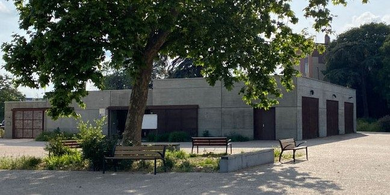
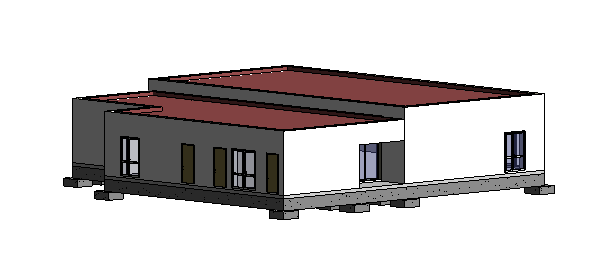

MDQB · TD 01 · Ven. 13/11 · 4 h · Formative
S1Découvrir le projet : quoi modéliser, et où ?
« Que faut-il ajouter à la maquette de l'architecte, et où ? »
L'architecte vous confie le dossier. Avant de toucher à la maquette, il veut savoir si vous avez compris le projet, ce qui est déjà modélisé, et ce que demandent les CCTP du second œuvre.

Déroulé
-
15 min
Lancement
Présentation du projet, de la séquence et du rendu du 18/12. Créez votre arborescence de dossiers (voir l'accueil du projet).
-
45 min
A · Fiche d'identité du projet
À l'aide des plans et des pages de garde des CCTP, complétez la fiche. Vos réponses restent enregistrées sur ce poste ; imprimez-la en PDF à la fin.
Liste des locaux (nom et surface relevés sur le plan RDC)
Local Surface (m²) Supprimer Méthode · Type et catégorie d'un ERP
Le type (lettre) dépend de l'activité ; la catégorie (1 à 5) dépend de l'effectif accueilli. Une salle polyvalente relève en général du type L. Cherchez l'effectif ou la catégorie dans le dossier, sinon formulez une hypothèse justifiée.
-
45 min
B · Ce que contient la maquette
Ouvrez la maquette clos-couvert dans Revit. Parcourez le plan du RDC, une coupe et la vue 3D. Pour chaque élément, indiquez s'il est modélisé.

La maquette fournie : vue 3D du clos-couvert Élément Lot Présent Partiel Absent Remarque Poteaux et poutres béton 01 Gros œuvre Murs extérieurs 01 Gros œuvre Toiture-terrasse, acrotères 01 / 02 Menuiseries extérieures 04 Menuiserie alu Doublages des murs 07 Plâtrerie Cloisons intérieures 07 Plâtrerie Portes et châssis intérieurs 06 Menuiserie bois Sols finis (carrelage) 03 Carrelage Faux plafonds 07 Plâtrerie Pièces (nom, surface) — -
60 min
C · Croquis à main levée des niveaux
Sur une feuille A3, au crayon, sans règle graduée :
- Plan schématique du RDC : murs, poteaux, noms des locaux.
- Coupe schématique passant par une salle polyvalente et un local à faux plafond bas : dalle, sol fini (±0,00), faux plafonds, plancher haut, toiture.
- Cotez les hauteurs : hauteur sous plafond brute, hauteurs sous faux plafond (HSFP) relevées dans le CCTP du lot 07.
- Coloriez par lot où ira chaque ouvrage, avec une légende.
Rouge · cloisons et doublages (lot 07)Bleu · faux plafonds (lot 07)Vert · sols carrelés (lot 03)Marron · portes et châssis (lot 06)Méthode · Réussir un croquis coté
- Commencez par les axes et les poteaux, puis les murs.
- Respectez les proportions : comptez les trames.
- Traits forts pour les éléments coupés, traits fins pour les vues.
- Cotez en mètres avec deux décimales (2,50).
- Ajoutez un titre, votre nom, la date.
-
60 min
D · Tableau des types de second œuvre
Lisez les articles ci-dessous et créez un type par ligne : code, lot, article, composition et épaisseur totale. Ce tableau sera votre cahier des charges pour modéliser en S2 à S4. La première ligne est un exemple.
- Lot 07 : articles 2.1 à 2.7 (doublages, cloisons), 2.9 à 2.12 (faux plafonds)
- Lot 06 : articles 2.1 à 2.4 (portes, châssis, placards)
- Lot 03 : articles 2.2 à 2.4 (carrelages)
Codes à utiliser : DBL- doublage, CLO- cloison, FP- faux plafond, SOL- sol, POR- porte.
Code type Revit Lot Art. CCTP Composition (de l'extérieur vers l'intérieur) Épaisseur (mm) Supprimer DBL-BA13-COLLE 07 2.1 Plots de MAP + 1 plaque BA13 ≈ 13 + plots Méthode · Lire un article de CCTP
- Description : matériaux, nombre de plaques, isolant, ossature.
- Performances : coupe-feu, acoustique (Rw), résistance thermique (R).
- Hauteur : sous plancher, sous faux plafond, faux plafond + 10 cm.
- Localisation : les locaux concernés et le plan de référence.
Méthode · Calculer l'épaisseur d'une cloison
Épaisseur = ossature + plaques des deux faces. Exemple : Placostil 72/48 = rail de 48 mm + 1 BA13 par face → 48 + 2 × 12,5 ≈ 72 mm. Si l'épaisseur annoncée ne correspond pas à la composition décrite, notez-le : c'est une incohérence à signaler.
-
15 min
Bilan
Mise en commun : quels ouvrages manquent dans la maquette ? Quelles incohérences avez-vous relevées entre les plans et les CCTP ?